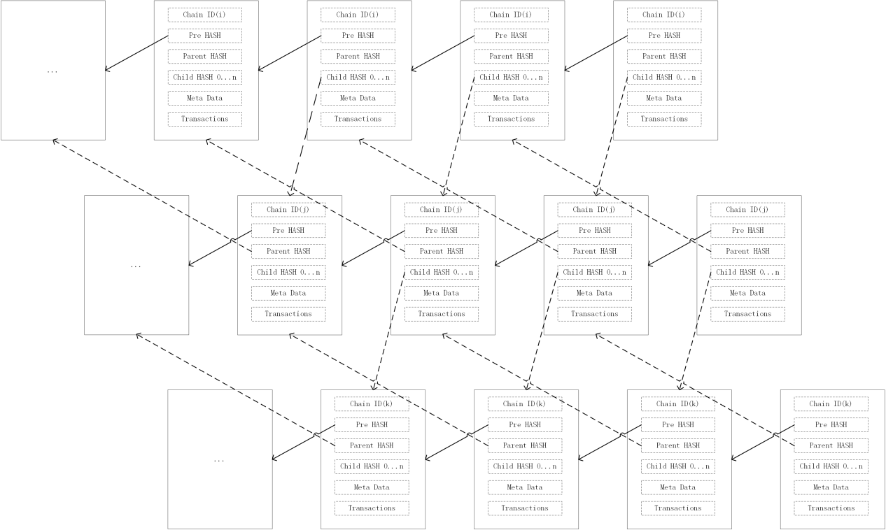

Blockbeziehung zwischen Ketten
Nimm an die momentane Chain ist Chain2 und seine Eltern-Kette ist Chain1. Der momentane Block von Chain2 ist B2.i (B2 bezieht sich auf den Block auf Chain2, i auf Block-ID) und sein Eltern-Hash ist B1.j, welcher den Zeitstempel von B2.i minus den Zeitstempel von B1.j ben�tigt. Der Zeitunterschied ist gr��er als 4 Minuten (Block-Best�tigungs-Zeit), was versichert, dass der Rollback nicht die Eltern- und Kind-Kette beeinflusst.
Der Zeitunterschied betr�gt weniger als 5 Minuten, um auf Daten �ber mehrere Ketten hinweg zugreifen zu k�nnen. Innerhalb einer Kette betr�gt der maximale Zeitunterschied 5 Minuten. �ber n Ketten betr�gt der maximale Zeitunterschied n \ 5 Minuten. Solange die Differenz zwischen der Blockzeit und der Datenzeit (Daten haben Zeitinformationen, Einzelheiten finden Sie im nachfolgenden Datenkapitel) mehr als n \ 5 Minuten betr�gt, handelt es sich um g�ltige Daten, auf die �ber Ketten zugegriffen werden kann.

Die obige Abbildung zeigt eine vereinfachte Blockbeziehung zwischen den drei Ketten. Es ist nur eine einfache Illustration. Der eigentliche Eltern-Kind-Block ist weiter voneinander entfernt und der Zeitunterschied betr�gt 4-5 Minuten.
Die Blockchain realisiert durch die Hashsperre der bevorstehenden und nachkommenden Blocks, dass diese nicht manipulierbar ist.
Dieses Projekt erweitert es, um das Hash-Sperren von Eltern-Kind-Ketten zu blockieren. Auf diese Weise ist der Eltern-Kind-Kettenblock nicht manipulierbar. Die Hashsperre zwischen Eltern- und Kind-Kette kann die Konsistenz der Informationen, welche ketten�bergreifend gelesen werden, versichern. Gleichzeitig ist der Zeitunterschied zwischen Eltern- und Kind-Block limitiert, sodass ketten�bergreifender Zugriff m�glich ist, solange die Validit�t der Daten bestimmt ist durch (Abstand zwischen den Ketten * maximale Zeit).